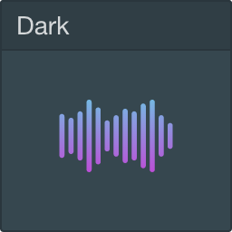
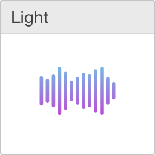

<div class="full-vertical-flex" :class="settings.fontSize">
    <div class="app-drag-bar">
        <h1>lyricfier</h1>
    </div>
    <div class="settings">
        <h1>
            <a href="#" @click.prevent="goBack"><span class="material-icons">arrow_back</span></a>
            Settings
        </h1>
        <form>
            <fieldset>
                <legend>Core</legend>
                <ol>
                    <li>
                        <label>
                            <span>Lyric refetch rate</span>
                            <select v-model="settings.refreshInterval" @change="onChangeSettings()">
                                <option :value="1000">1 sec</option>
                                <option :value="3000">3 sec</option>
                                <option :value="5000">5 sec</option>
                                <option :value="7000">7 sec</option>
                                <option :value="10000">10 sec</option>
                            </select>
                        </label>
                    </li>
                </ol>
            </fieldset>
            <fieldset>
                <legend>User interface</legend>
                <ol>
                    <li class="settings__theme">
                        <span>Theme</span>
                        <a href="#" @click.prevent="setTheme('dark')">
                            
                        </a>
                        <a href="#" @click.prevent="setTheme('light')">
                            
                        </a>
                    </li>
                    <li>
                        <label>
                            <span>Font size</span>
                            <select v-model="settings.fontSize" @change="onChangeSettings()">
                                <option value="eight-pt">8 pt</option>
                                <option value="ten-pt">10 pt</option>
                                <option value="twelve-pt">12 pt</option>
                                <option value="fourteen-pt">14 pt</option>
                                <option value="sixteen-pt">16 pt</option>
                            </select>
                        </label>
                    </li>
                    <li>
                        <label>
                            <input type="checkbox" v-model="settings.alwaysOnTop" @change="onChangeSettings()"> Keep Lyricfier always on top
                        </label>
                    </li>
                </ol>
            </fieldset>
        </form>
    </div>
</div>
